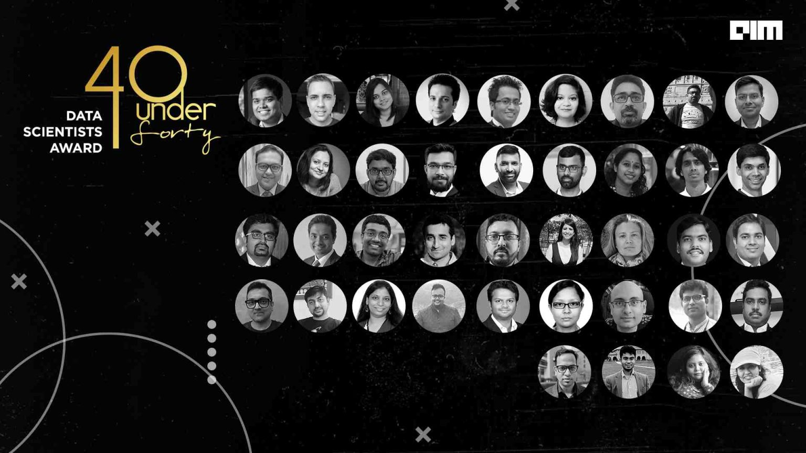

I’m Karan. I like solving problems that don’t have easy answers.
Over the last 16+ years, I’ve worked at the intersection of data, technology, and real-world decision making, across industries where getting the answer wrong can have serious consequences — particularly Aviation, Life Sciences, and Supply Chain.
My journey has taken me from statistical modelling and forecasting to machine learning, causal inference, experimentation, and, more recently, Generative AI. What interests me most isn’t the technology itself, but what we can build with it.
Today, I lead a multidisciplinary team of engineers and data scientists focused on turning ideas in AI and analytics into production-grade products. Much of my current work involves combining the capabilities of GenAI with traditional analytical and physics-based models — bringing together what machines can learn from data with what we already know about how the world works.
Over the years, I’ve been fortunate to work on problems that have created significant value for organizations. But what keeps me curious is what comes next — exploring new ideas, experimenting with emerging technologies, and finding better ways to solve difficult problems.
I’m a data scientist at heart, an AI builder by choice, and a perpetual learner by nature.
Granted and pending U.S. patents from my work on physics-based AI and health monitoring systems.
A wireless sensor network embedded within composite aircraft engine components that detects structural damage in real time, removing the need for wired sensors on rotating parts.
⇗ View on Google PatentsA physics-informed predictive modeling method that combines observed distress data with environmental and operational parameters to forecast component distress and guide maintenance scheduling.
⇗ View on Google Patents
A selection of end-to-end data science projects — from notebooks to production.
Fine-tuned BERT model for real-time customer review classification across 5 sentiment classes. Deployed as a REST API on AWS Lambda.
Time-series forecasting using Prophet and LSTM for a retail chain, reducing inventory cost by 18%. Interactive Plotly Dash frontend.
CNN-based X-ray classification for pneumonia detection with 94% accuracy. Trained on NIH Chest X-ray dataset with custom augmentation pipeline.
Collaborative filtering + content-based hybrid recommender using matrix factorization. Evaluated on MovieLens 25M dataset.
Interactive geospatial and time-series analysis of global pandemic data. Used Plotly, GeoPandas, and Streamlit for the live dashboard.
End-to-end MLOps pipeline with automated retraining, model registry, A/B testing, and drift detection using MLflow and DVC.
Thoughts and write-ups on data science, causal AI, and aviation analytics.
I'm working on my first posts — check back soon.